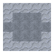

Дикоростучі фрукти
Дикоростучі фрукти
У світі росте багато різних сортів дикоростучіх фруктів. Їх можна збирати, щоб їсти, або вирощувати. Плоди та ягоди можна знайти на трьох видах рослин: фруктові дерева, високі та низькі кущі.
Усі плодові рослини мають загальний життєвий цикл. Вони будуть рости, квітнути, давати плоди, а потім залишатися в стані спокою протягом річного циклу.
Плодові рослини є сезонними. У холодну пору року ці рослини виглядатимуть сірими та млявими. Навесні вони стають зеленими і здоровими, готуються до плодоношення і ростуть. Точний час, коли це відбувається, залежить від плоду. Плодові рослини можуть загинути і від старості, і від невідповідних кліматичних умов.
Фруктові дерева
Фруктові дерева виростають із крихітних саджанців у великі квітучі дерева. Гілки фруктових дерев — це їхнє серце, і вони будуть рости, поки існують сприятливі кліматичні умови. Листя згодом виростає з гілок. Потім з'являються квіти і, нарешті плоди.
Звичайне фруктове дерево
Fruit trees start out at Saplings. Saplings will only start growing, placing their first piece of the tree, if it is not the dormant season for that fruit and the climate requirements for that tree are met. The size of the finished tree is loosely determined by how many saplings are in the original sapling block. More saplings means a bigger tree.
More saplings can be added to a single block through Splicing. To splice a sapling into another, just ПКМ on it while holding a sapling and a Knife in your off hand.
Щоб отримати саджанці фруктового дерева, зрубай сокирою 'ліктьові' блоки (блоки гілок, які прикріплені до блоку з одного боку і зверху). Саджанці також можна розмістити на цих 'ліктях', якщо вони не надто високо в дереві. Це дозволяє на одному плодовому дереві вирощувати кілька різних плодів. Щоб зібрати плоди використовуй ПКМ по листю, коли плоди зрілі. Це дасть один плід і поверне рослину до стадії росту, поки вона не перейде в сплячку на зиму.
The correct Temperature and Hydration are essential when planting fruit trees. Fruit trees will only grow and bear fruit if the Annual Average Temperature at the base of the tree (where the sapling is planted) is within that tree's range. Likewise, hydration is determined by the Average Annual Rainfall and water sources near to the base of the tree.
Вишня
Can be found in regions with:
Temperature: -5.2 - 14 °C
Rainfall: 100 - 350mm
Conditions required for growth:
Temperature: -6.4 - 15.2 °C
Hydration: 7 - 80%
Cherry trees grow in the months of January through March, start flowering in April and May, and bear fruit in June.
Mультиблок
Вишневе дерево
Яблуня зеленоплідна
Can be found in regions with:
Temperature: -10.6 - 10.4 °C
Rainfall: 130 - 280mm
Conditions required for growth:
Temperature: -11.8 - 11.6 °C
Hydration: 10 - 75%
Green apple trees grow from March to July, start flowering in August and September, and bear fruit in October.
Mультиблок
Зеленоплідна яблуня
Лимон
Can be found in regions with:
Temperature: 7.4 - 24.8 °C
Rainfall: 220 - 440mm
Conditions required for growth:
Temperature: 6.2 - 26 °C
Hydration: 19 - 95%
Lemon trees grow from February to May, start flowering in June and July, and bear fruit in August.
Mультиблок
Лимонне дерево
Оливкове дерево
Can be found in regions with:
Temperature: 2 - 23 °C
Rainfall: 250 - 450mm
Conditions required for growth:
Temperature: 0.8 - 24.2 °C
Hydration: 22 - 95%
Olive trees grow from March to July, start flowering in August and September, and bear fruit in October.
Olives can be used to produce Olive Oil, which can be used as a fuel for lamps.
Mультиблок
Оливкове дерево
Апельсин
Can be found in regions with:
Temperature: 9.2 - 40 °C
Rainfall: 300 - 500mm
Conditions required for growth:
Temperature: 8 - 41.2 °C
Hydration: 27 - 100%
Orange trees grow from March to June, start flowering in July and August, and bear fruit in September.
Mультиблок
Апельсинове дерево
Персик
Can be found in regions with:
Temperature: -3.4 - 15.8 °C
Rainfall: 180 - 470mm
Conditions required for growth:
Temperature: -4.6 - 17 °C
Hydration: 15 - 95%
Peach trees grow from December to March, start flowering in April and May, and bear fruit in June.
Mультиблок
Персикове дерево
Слива
Can be found in regions with:
Temperature: -7 - 12.2 °C
Rainfall: 120 - 300mm
Conditions required for growth:
Temperature: -8.2 - 13.4 °C
Hydration: 9 - 75%
Plum trees grow from January to April, start flowering in May and June, and bear fruit in July.
Mультиблок
Сливове дерево
Яблуня червоноплідна
Can be found in regions with:
Temperature: -10.6 - 10.4 °C
Rainfall: 190 - 310mm
Conditions required for growth:
Temperature: -11.8 - 11.6 °C
Hydration: 16 - 75%
Red Apple trees grow from March to July, start flowering in August and September, and bear fruit in October.
Mультиблок
Червоноплідна яблуня
Банан
Can be found in regions with:
Temperature: 11 - 40 °C
Rainfall: 280 - 500mm
Conditions required for growth:
Temperature: 9.8 - 41.2 °C
Hydration: 25 - 100%
Bananas are a special kind of fruit tree. They grow only vertically, lack leaves, and only fruit at the topmost block. Saplings are dropped from the flowering part of the plant. Once a banana plant is harvested, it dies, and will not produce any more fruit. It must be replanted in the spring.
Mультиблок
Банан
Фруктові дерева
The fruiting calendar for fruit trees.
Jan | Feb | Mar | Apr | May | Jun | Jul | Aug | Sep | Oct | Nov | Dec | |
|---|---|---|---|---|---|---|---|---|---|---|---|---|
Cherry | ||||||||||||
Apple | ||||||||||||
Lemon | ||||||||||||
Olive | ||||||||||||
Orange | ||||||||||||
Peach | ||||||||||||
Plum | ||||||||||||
Banana |
Legend
Dormant
Healthy
Flowering
Fruiting
Високі кущі
Високі кущі - це фруктові блоки, які здатні рости в усіх напрямках і поширюватися. Вони або ростуть вгору до трьох блоків, або розміщують пагони з боків, які можуть вирости у новий кущ. Через деякий час кущі перестануть розростатися і досягнуть зрілості. Зрізання цих кущів гострим інструментом має шанс скинути новий кущ. Повністю дозрілі кущі завжди опадають самі.
Високий дикий кущ
Високі кущі здатні розростатися, коли їхнім пагонам є де прижитися. На практиці це означає, що для розміщення пагону потрібен міцний блок під ним. Забезпечення рівної відкритої ділянки, вільної від трави чи іншого сміття, дає їм найкращі шанси для росту.
Bushes, like Fruit Trees, consider the base block of the plant when determining Hydration and Temperature, and grow as long as the Annual Average Rainfall and Temperature are correct.
Any full bush block can grow berries, which are harvestable with ПКМ.
Кущ ожини
Can be found in regions with:
Temperature: -5.2 - 19.4 °C
Rainfall: 200 - 500mm
Conditions required for growth:
Temperature: -6.4 - 20.6 °C
Hydration: 17 - 100%
Blackberry bushes grow from February to May, start flowering in June and July, and bear fruit in August.
They can be found in areas with few trees.
Mультиблок
Кущ ожини
Кущ малини
Can be found in regions with:
Temperature: -10.6 - 14 °C
Rainfall: 180 - 450mm
Conditions required for growth:
Temperature: -11.8 - 15.2 °C
Hydration: 15 - 95%
Raspberry bushes grow from April to July, start flowering in August and September, and bear fruit in October.
They can be found in areas with few trees.
Mультиблок
Кущ малини
Кущ чорниці
Can be found in regions with:
Temperature: -8.8 - 8.6 °C
Rainfall: 150 - 400mm
Conditions required for growth:
Temperature: -10 - 9.8 °C
Hydration: 12 - 90%
Blueberry bushes grow from February to May, start flowering in June and July, and bear fruit in August.
They can be found in areas with few trees.
Mультиблок
Кущ чорниці
Кущ бузини
Can be found in regions with:
Temperature: -5.2 - 15.8 °C
Rainfall: 120 - 380mm
Conditions required for growth:
Temperature: -6.4 - 17 °C
Hydration: 9 - 85%
Elderberry bushes grow from February to May, start flowering in June and July, and bear fruit in August.
They can be found in areas with few trees.
Mультиблок
Кущ бузини
Large Berry Bushes
The fruiting calendar for large berry bushes.
Jan | Feb | Mar | Apr | May | Jun | Jul | Aug | Sep | Oct | Nov | Dec | |
|---|---|---|---|---|---|---|---|---|---|---|---|---|
Blackberry | ||||||||||||
Raspberry | ||||||||||||
Blueberry | ||||||||||||
Elderberry |
Legend
Dormant
Healthy
Flowering
Fruiting
Малі кущі
Малі кущі є різновидом низьких фруктових блоків, які з'являються в лісах. Невеликі кущі час від часу поширюються на навколишні блоки, якщо поруч не надто багато інших кущів.
Маленькі кущі пройдуть три стадії росту до появи ягід. Ягоди збирають просто, натисни на стиглій ягоді ПКМ.
Mультиблок
Три різні розміри малих кущів
Кущ кизилу
Can be found in regions with:
Temperature: -14.2 - 1.4 °C
Rainfall: 280 - 500mm
Conditions required for growth:
Temperature: -15.4 - 2.6 °C
Hydration: 25 - 100%
Bunchberry bushes grow from May to July, start flowering in August and September, and bear fruit in October.
They can be found in forests.
Mультиблок
Помісячні стадії росту куща кизилу
Кущ аґрусу
Can be found in regions with:
Temperature: -7 - 12.2 °C
Rainfall: 200 - 500mm
Conditions required for growth:
Temperature: -8.2 - 13.4 °C
Hydration: 17 - 100%
Gooseberry bushes grow from April to July, start flowering in August and September, and bear fruit in October.
They can be found in forests.
Mультиблок
Помісячні стадії росту куща аґрусу
Кущ сніжноягідника
Can be found in regions with:
Temperature: -10.6 - 5 °C
Rainfall: 200 - 500mm
Conditions required for growth:
Temperature: -11.8 - 6.2 °C
Hydration: 17 - 100%
Snowberry bushes grow from March to June, start flowering in July and August, and bear fruit in September.
They can be found in forests.
Mультиблок
Помісячні стадії росту куща сніжноягідника
Кущ морошки
Can be found in regions with:
Temperature: -14.2 - 6.8 °C
Rainfall: 80 - 320mm
Conditions required for growth:
Temperature: -15.4 - 8 °C
Hydration: 5 - 80%
Cloudberry bushes grow from February to May, start flowering in June to August, and bear fruit in September.
They can be found in forests.
Mультиблок
Помісячні стадії росту куща морошки
Кущ полуниці
Can be found in regions with:
Temperature: -1.6 - 17.6 °C
Rainfall: 140 - 400mm
Conditions required for growth:
Temperature: -2.8 - 18.8 °C
Hydration: 11 - 90%
Strawberry bushes grow from October to December, start flowering in January and February, and bear fruit in March.
They can be found in forests.
Mультиблок
Помісячні стадії росту куща полуниці
Кущ брусниці
Can be found in regions with:
Temperature: -8.8 - 6.8 °C
Rainfall: 100 - 370mm
Conditions required for growth:
Temperature: -10 - 8 °C
Hydration: 7 - 85%
Wintergreen berry bushes grow from May to September, start flowering in October and November, and bear fruit in December.
They can be found in forests.
Mультиблок
Помісячні стадії росту куща брусниці
Кущ журавлини
Can be found in regions with:
Temperature: -14.2 - 8.6 °C
Rainfall: 250 - 500mm
Conditions required for growth:
Temperature: -15.4 - 9.8 °C
Hydration: 25 - 100%
Cranberry bushes grow from March to June, start flowering in July and August, and bear fruit in September.
They can be found in forests. Unlike most small bushes, cranberry bushes are grown underwater.
Mультиблок
Помісячні стадії росту куща журавлини
Small Berry Bushes
The fruiting calendar for small berry bushes.
Jan | Feb | Mar | Apr | May | Jun | Jul | Aug | Sep | Oct | Nov | Dec | |
|---|---|---|---|---|---|---|---|---|---|---|---|---|
Bunchberry | ||||||||||||
Gooseberry | ||||||||||||
Snowberry | ||||||||||||
Cloudberry | ||||||||||||
Strawberry | ||||||||||||
Wintergreen | ||||||||||||
Cranberry |
Legend
Dormant
Healthy
Flowering
Fruiting